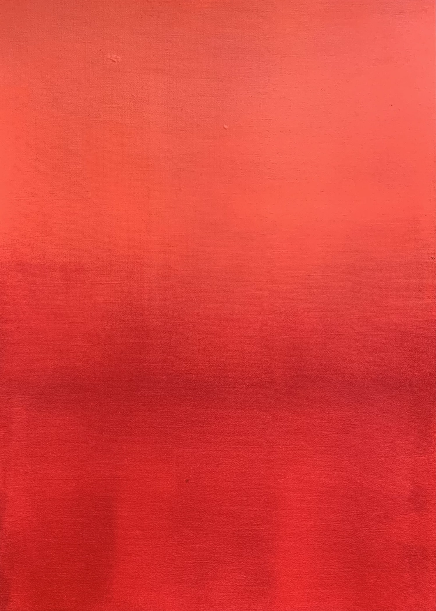

Sans titre, 100x120cm, Acrylic on canvas

Sans titre, 40x50cm, Acrylic on canvas
Le projet Upheaval explore l’impact des activités humaines sur les écosystèmes terrestres et marins. Inspiré des codes de la datavisualisation et des warming stripes du climatologue britannique Ed Hawkins ce projet propose une interprétation visuelle de problématiques environnementales qui me tiennent à coeur.
L’objectif est de traduire des phénomènes complexes à travers la couleur et la composition, afin de créer un dialogue entre information brute et émotion.
Upheaval

Coral bleaching 1980-2018, 40x50cm, Acrylic on canvas

Macroplastic accumulation 1950-2016, 40x50cm, Acrylic on canvas

Ocean acidification 1985-2022, 40x50cm, Acrylic on canvas

Freshwater cycles 2002-2024, 40x50cm, Acrylic on canvas

Land-system change 1990-2020, 40x50cm, Acrylic on canvas
Les oeuvres de la série Abstractions sont nées de gestes libres, intuitifs, presque automatiques, où les formes surgissent sans plan préétabli. Elles s'assimilent à la pratique du Doodle Art enrichies par un travail sur la matière et les textures obtenues via des gestes minutieusement répétés dans une forme de "hasard maîtrisé". On pourrait qualifier ces motifs abstraits de "réminiscences intuitives" : ils ne racontent rien de précis et laissent libre cours à l'imagination et à l'interprétation chez le spectateur.
Abstractions

Red duo, 60x80cm, Acrylic on canvas

Blue duo, 60x80cm, Acrylic on canvas

Agathe, 30x21cm, Acrylic on paper

Blue study, 21x30cm, Acrylic on paper
La série Color studies regroupe des études à l’acrylique centrées sur la couleur, la transparence, la superposition des couches et les variations tonales. Il s'agit d'un travail expérimental ayant pour objectif d'explorer les interactions chromatiques, les effets de lumière et les textures.
Color studies
Blue Study 2, 30x42cm, Acrylic on paper

Yellow and black on blue, 80x100cm, Acrylic on canvas

White and blue stripes, 100x120cm, Acrylic on canvas

Blue stripes study, 30x42cm, Acrylic on paper

Orange and red study, 30x42cm, Acrylic on paper
Black study, 42x30cm, Acrylic on paper

Black and green study, 30x42cm, Acrylic on paper
Ce projet rassemble des photographies réalisées entre 2018 et aujourd'hui. À l’instar de Hans Hartung, qui évoquait les liens « plus ou moins proches » entre sa pratique picturale et ses photographies, j’explore dans cette série le lien entre deux médiums qui m’ont toujours passionnés, en capturant des fragments d’architecture ou des morceaux de ciel. L’un des objectifs est d’amener le spectateur à s’interroger, à travers ces images ambigües où le regard cherche ses repères, sur la frontière entre abstraction et figuration.
Photography

C1, 2025

C2, 2025

C3, 2025

Ribs, 2018

Ribs 2, 2018

Backbone, 2018
N.F., 2024

SB1, 2018

Artiste autodidacte, j’ai débuté mon parcours par une formation en Marché de l’art, nourrissant très tôt une passion pour la peinture. En parallèle de mes différentes activités, je ne cesse donc de pratiquer ce qui m'anime le plus : la création.
Mon travail mêle expérimentations techniques, recherches chromatiques et questionnements intérieurs. La nature, les émotions, les sentiments, les sensations, constituent autant de sources d'inspiration et de pistes de réflexion dans mes recherches plastiques sur la lumière, la matière et la couleur. Ainsi, chaque série constitue pour moi une étape singulière dans un parcours de découverte de soi et de notre environnement.
Arthur Evrard
Contact : evrard.arthur@gmail.com
Instagram : @arthurevrardart